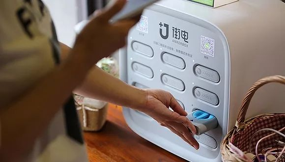

朱啸虎：创业企业不要倒在疫情结束后的“倒春寒”
原文链接 备份链接 燃财经（ID:rancaijing）原创 作者 | 唐亚华 编辑 | 魏佳 “创业企业要警惕，不要倒在疫情结束后的‘倒春寒’上。”在燃财经举办的线上沙龙上，金沙江创投主管合伙人朱啸虎对创业者发出预警。他表示，疫情结束 …

图片来源：视觉中国
记者：郑洁瑶
“
疫情开始以来，KTV、网吧、洗浴中心等娱乐场所基本都被暂停营业，餐饮、酒店则门可罗雀。对于共享充电宝这类非常依赖人流量的行业来说，这几乎是致命打击。
”
一场来势汹汹的疫情，让共享充电宝赛道的大小玩家遭遇了有史以来的最大危机。
和其他互联网项目不同，共享充电宝的商业模式对线下商户依赖极强，只要线下商户不开业，共享充电宝就无法产生有效订单。
而疫情开始以来，KTV、网吧、洗浴中心等娱乐场所基本都被暂停营业，餐饮、酒店则门可罗雀。对于共享充电宝这类非常依赖人流量的行业来说，这几乎是致命打击。
日前，小电科技CEO唐永波发表了一篇公开信。信中指出，疫情对公司业务已经造成致命打击，一方面收入骤降冰点，另一方面公司还有5000名员工的工资以及供应链和各地办公租金等多项支出亟待解决。
如果疫情持续到3月，那不仅会影响到整个一季度的业绩，也会影响业界对整个行业的信心。
但现在，疫情的拐点还未明确出现，为了自救，不少企业也开始了紧急的节流措施。
据界面新闻记者了解，目前已有一家公司选择将1月工资扣除一半，缓至2月20日发放，而2月和3月工资，底薪正常发放，绩效和提成却要延后到6月发放。
程晓是上述公司的一名商务BD。据其介绍，目前，该公司除了少数行政、公关、技术同事已经通过远程在线的方式开始待命，其他的线下BD则统统处于放假状态。“HR就叫我们看当地的疫情情况，根据当地政府的要求来，没有通知就先原地不动。但看这个情况，我觉得上班的日子遥遥无期。”
在业内，程晓所在的公司已经算是在赛道前列。头部企业尚且如此艰难，其他中小共享充电宝企业日子可想而知。
事实上，共享充电宝此前的日子并不难熬，其已是共享经济里唯一能大面积实现盈利的赛道。2019年3月，街电COO何顺接受媒体采访时就曾表示，头部玩家基本都是盈利的。而在街电之后，“三电一兽”剩余的企业也都相继宣布盈利。
但一场疫情，却给这个行业带来致命打击。
一旦上游商户的人流量得不到保障，充电宝作为下游，就会受到严重影响。除此以外，充电宝还要向商户缴纳不低的租金或入场费。
梅花天使的创始合伙人吴世春曾经告诉界面记者，共享充电宝本身就是一个低毛利的商业模型，随着商家的胃口越来越大，充电宝的盈利空间也会被挤压的越来越小。而这也会影响到公司的现金流储备。
去年，程晓所在的公司就曾豪掷2000万换来了一家连锁夜店集团三年的独家入驻权。而类似的事行业内比比皆是，在他看来，这也是公司目前现金流告急的原因之一。
据了解，为了获得更多的入场费，不少连锁餐饮甚至会启用招标的方式来选择合作的共享充电宝伙伴。这显然已经是行业进入低效竞争的开始。突如其来的疫情危机，或许也会促使着各家企业去思考这类模式的弊端并努力去寻找新的盈利模式。
疫情会持续多久尚未可知，但可以确定的是，整个实体经济还要度过很长一段时间的信心重建期，能否熬过去，将成为每一个线下服务企业必须要面临的生死大考。
未经授权 禁止转载

原文链接 备份链接 燃财经（ID:rancaijing）原创 作者 | 唐亚华 编辑 | 魏佳 “创业企业要警惕，不要倒在疫情结束后的‘倒春寒’上。”在燃财经举办的线上沙龙上，金沙江创投主管合伙人朱啸虎对创业者发出预警。他表示，疫情结束 …
原文链接 备份链接 《创新经济战疫计划》，是燃财经在新型肺炎疫情期间推出的特别栏目，关注创新经济企业遇到的新难题、商讨应该采取的新对策，希望能够帮助中小企业一起战胜挑战、把握机会。 作者 | 唐亚华 编辑 | 魏佳 2月10日起，北京、上 …
原文链接 备份链接 记者：张子怡 “ 行业自救，保证经营稳定，扛过疫情。 ” 从小年夜开始，家居龙头红星美凯龙旗下商场暂停了营业，开始春节休假。但疫情袭来，让他们的开业时间一推再推。 红星美凯龙最初的计划是1月29日恢复营业，由于疫情形势 …
原文链接 备份链接 《创新经济战疫指南》，是燃财经在新型肺炎疫情期间推出的特别栏目，关注创新经济企业遇到的新难题、商讨应该采取的新对策，希望能够帮助中小企业一起战胜挑战、把握机会。本文是第4期。查看前3篇请点击《哪些行业正在逆势爆 …
原文链接 备份链接 08.02.2020本文字数：1731，阅读时长大约3分钟 导读：“先扛过这一段，再谋未来。” 作者 | 第一财经 刘佳 王海 邱智丽 “我们这里有员工符合七鲜超市的要求，不知道是否可以安排面试？”这是七鲜超市HR小 …